| mean_type | error_type | experimental_mean | experimental_error | experimental_N | control_mean | control_error | control_N |
|---|---|---|---|---|---|---|---|
| mean | SD | 1.5 | 0.10 | 15 | 0.75 | 0.09 | 15 |
| mean | SE | 3.0 | 0.05 | 20 | 1.50 | 0.04 | 20 |
| median | 95% CI | 2.0 | 0.08 | 30 | 2.00 | 0.07 | 30 |
Continuous outcomes between two groups
SMD / lnRoM
TipKey points
- Use SMD (estimated by Hedges’ g) or lnRoM for continuous outcomes compared between two groups.
- Paired designs need an assumed pre-post correlation to convert the SD of the differences.
- For before-after-control-impact designs, standardize the difference-in-differences by the pooled pre-test SD (Morris 2008).
- Model estimates can be used when they estimate the target quantity on a compatible scale and come with an SE. Flag them for sensitivity analysis
The experimental workhorse
These are among the most commonly used effect size types in meta-analyses. These effect sizes compare a continuous response variable between two discrete categorical predictors (e.g., Control vs Experiment). By continuous, we mean a measurement summarized by its central tendency (mean, median) and dispersion (variance, standard deviation, standard error) across replicates. These replicates are the sample size.
The primary effect sizes that can be calculated with this data are standardized mean difference (SMD) and log-transformed ratio of means (lnRoM). Please see here for a more thorough description of these effect sizes, their assumptions, and their interpretation. In general, the extraction for these effect sizes is similar. However, as you will see, some data types constrain you to only using SMD because of values ≤ 0 or because of model estimates (t statistics), which only SMD can handle.
Important
The primary aim of this tutorial is to align extractions with target estimands of SMD and lnRoM (see here).
However, some of the extraction challenges in this page are naturally suited for alternative estimands that account for different study designs. These alternative estimands are not interchangeable with meta-analyses focused on SMD or lnRoM. When these cases show up, we acknowledge the “ideal” estimands but present solutions to allow calculation of SMD and lnRoM target estimands. We also briefly discuss these alternative estimands in the escalc cheatsheet. If your entire meta-analysis consists of these situations, then you may want to use these alternative estimands directly.
Database design
We recommend structuring your database to be wide, with columns and to look approximately like this (omitting article id, effect size id, and the other non-independence structures and covariates that you might be interested in):
Feel free to download our database template, which you should customize to meet the requirements of your meta-analysis:
Extraction
The simple cases
We’ll start with the simplest figure types, mostly in order to contrast with more complex types. If you’re using metaDigitise() to extract data (Pick et al. 2018), the function will guide you through calibrating the axes and selecting the top of the error bars and the top of the bars themselves (the mean). If the figure reports standard error (\(se\)), metaDigitise() will convert it automatically to standard deviation (\(sd\)). Always be aware of what the error type the figures (or text) are reporting.
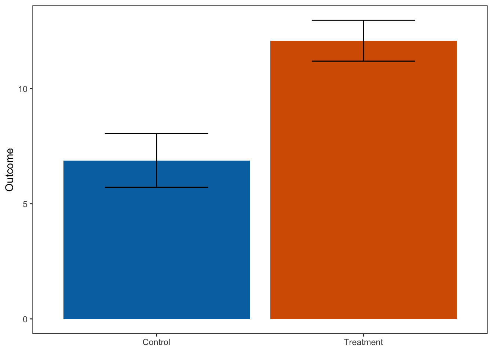
NoteWatch out for misreporting of \(SE\) as \(SD\)
One very challenging problem is when the authors of primary articles misreport the error they plot. This is unfortunately not uncommon and can have a huge influence on your results.
After extracting all of your studies and converting the various forms of error (i.e., \(SE\), confidence intervals) to \(SD\), we recommend screening the \(CVs\) (\(CV = sd/m\)) of your dataset. Look for anomalously small values and double check the original articles from which those estimates were extracted. If in doubt, contact the authors and/or exclude extremely low CV effect sizes from your analysis in sensitivity analyses.
Also, consider doing simulations of data on the primary study scale to see how likely it would be, given the sample size, to arrive at those \(SD\) values.
Box plots are also straightforward and involve extracting the minimum, lower quartile, median, upper quartile, and maximum values. metaDigitise() will walk you through that extraction and will automatically convert the interquartile range and median to mean±SD.
NoteConvert median ± interquartile range to mean ± sd
For a median \(m\), quartiles \(q_1\) and \(q_3\), and sample size \(n\), the conversion is:
\[\begin{aligned} &\bar{x} \approx \frac{q_1+m+q_3}{3} \\ &sd \approx \frac{q_3-q_1}{2\Phi^{-1}\left(\frac{0.75n-0.125}{n+0.25}\right)} \\ \end{aligned}\]
where \(\Phi^{-1}\) is the inverse of the standard normal distribution function (qnorm() in R).
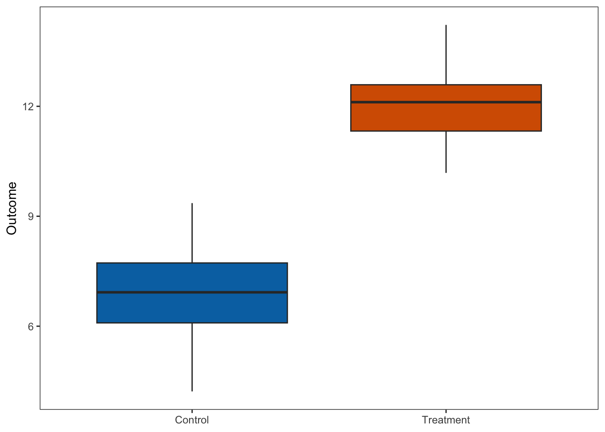
It’s also common to see figures like this with more complex non-independence structures. These can be dealt with by digitizing only the final time point or by controlling for non-independence with random effects (see here for a brief discussion of these issues).
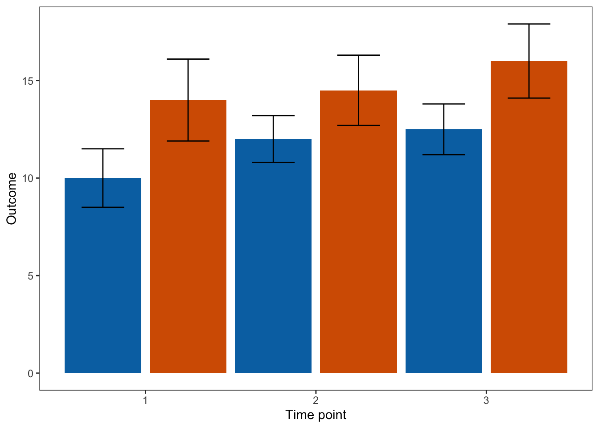
Let’s move on to more complex situations.
Important3-dimensional plots
There was a brief unfortunate period in the 1990s when these became popular. 3D plots often depicted multivariate histograms, as well as other data types such as bar charts.
We won’t discuss these much here, we just want to acknowledge your pain if you come across one. Hopefully the general plot designs will be similar to those covered in this tutorial. We believe that WebPlotDigitizer has options to calibrate 3D plots. Alternatively, popular LLMs (e.g., Gemini or Claude or ChatGPT) are likely able to extract this data.
Raw distributions
Histograms
It’s also common to see the outcome variable of the two discrete predictor groups plotted as separate histograms:
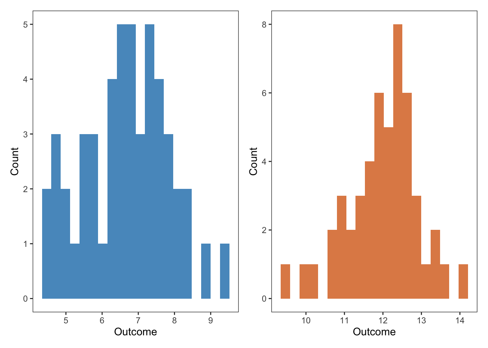
metaDigitise() luckily has built-in functionality for dealing with histograms. The function will guide you through each step, which requires calibrating the axes and then clicking on the left and right corners of each bar. It’ll then convert the extracted distributions into means±sd. This can be time-consuming. You can also try getting an LLM model to do it for you.
Violin and density plots
The beauty of modern plotting techniques has led to a proliferation of new ways to visualize data. Like violin plots.
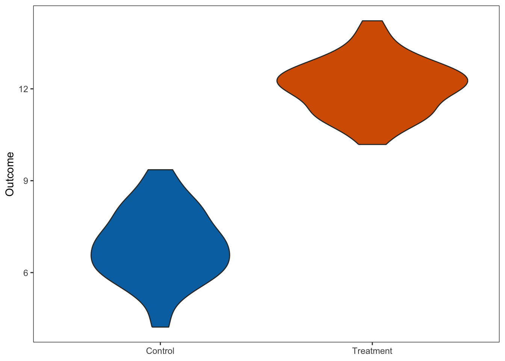
Violin plots are basically a vertical version of a density plot:
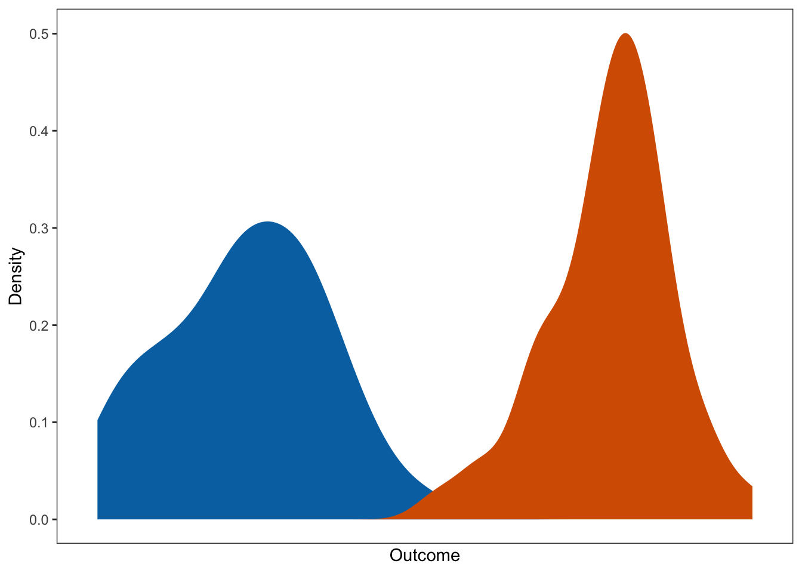
A violin or density plot shows a smoothed estimate of the distribution, rather than the original observations. Its shape depends partly on plotting choices, especially how much smoothing was used. This means that the width of a violin cannot be read as a standard deviation, and the bumps should not be treated as individual observations.
The example below draws the same observations three times. Only the smoothing changes. The sample mean and SD are therefore identical in every panel, even though the distributions appear to have different shapes.
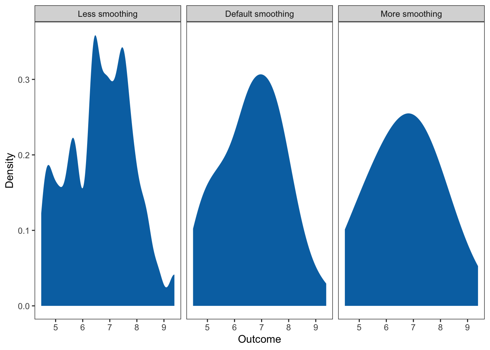
For an SMD or lnRoM, we recommend the following extraction order:
Look elsewhere first. Check the text, tables, figure caption, supplementary files, and data repository for the mean, SD, and sample size.
If individual observations are visible, digitize those observations. Calculate the mean and SD from the extracted values. Points may overlap, so use the reported sample size rather than counting the visible points whenever possible.
If the plot contains summary markers, extract only statistics that the caption or legend defines. A dot could represent either a mean or a median, and bars could represent an SD, interquartile range, or confidence interval. Their meaning should not be guessed from their appearance.
If only the violin or density outline is available, contact the authors. If the required statistics cannot be obtained, record the outcome as unavailable for calculating an SMD or lnRoM.
WarningDo not estimate the SD from the width of the violin
The outline is influenced by the smoothing method and bandwidth. Violin plots may also be scaled to have the same area or maximum width even when their sample sizes differ. The width therefore does not provide an SD or, unless the plotting method explicitly says otherwise, a sample size.
It is technically possible to digitize the outline at many outcome values and use its width to reconstruct the displayed density. We do not recommend this as a routine extraction method. The variance of the displayed density includes variation introduced by smoothing, so it is not necessarily the variance of the original observations. Recovering the original SD would require details such as the kernel, bandwidth, trimming, and any axis transformation, as well as a separately reported sample size. If such a reconstruction is attempted, label it as an estimated result, validate it against the plotted curve, and test whether excluding it changes the meta-analysis.
Proportion data
Proportion data (0-1) bounded without error
Sometimes SMD/lnRoM design types will present the total % of a population for a study design that is otherwise indistinguishable from other SMD/lnRoM studies in your dataset.
For an individual binary outcome coded 1 when the event occurs and 0 otherwise, the mean is the event proportion \(p\). Its variance and standard deviation are determined by \(p\):
\[\begin{aligned} &m = p \\ &Var = p(1-p) \\ &sd = \sqrt{p(1-p)}. \\ \end{aligned}\]
The expected number of events among \(N_{total}\) individuals is \(pN_{total}\), but that count is not the mean of the individual 0/1 outcomes. These formulas describe individual binary observations; they do not give the standard deviation among site-level or trial-level proportions.
If you’re facing this type of data in your meta-analysis you may want to consider whether SMD/lnRoM are the correct effect sizes for your meta-analysis. This type of data is meant to be analyzed with an lnOR type effect size. Alternatively, if these are rare scenarios in your meta-analysis, you may also consider calculating lnOR from these data and converting the lnOR point estimate and sampling variance to SMD. See here for a tutorial on effect size conversions and their assumptions.
Note that these conversions constrain you to using SMD: it is not possible to convert lnOR to lnRoM.
Mean±sd proportion data (0-1)
Suppose a study reports a proportion, i.e., a binary response, for each independent site and then reports the mean and SD across sites. These observations cannot be less than 0 or greater than 1. The boundaries therefore constrain how much the observations can vary, and that constraint depends on the mean.
This mean–variance relationship can make comparisons on the original scale strongly heteroscedastic. To use 0-1 bounded data, you should transform your means and standard deviation to stretch values into an approximation of normality.
Note
Note that some data types in ecology may not be true proportions but have similar properties. For example, plant cover data is often 0-1 bounded depending on how it’s calculated (though often reported on 0-100 scale). Flag these for correction following the code below.
The arcsine-square-root transformation does this (Macartney et al. 2022):
\[ g(x)=\arcsin(\sqrt{x}). \]
The transformation stretches values near 0 and 1 more than values near 0.5. If the individual proportions are available, transform each observation and then calculate the transformed mean and SD directly. If only the original mean \(m\) and SD \(sd\) are reported, the delta method provides the following approximation:
\[\begin{aligned} &m' \approx \arcsin(\sqrt{m})\\ &sd' \approx \frac{sd}{2\sqrt{m(1-m)}}.\\ \end{aligned}\]
The denominator becomes smaller near 0 or 1, so the transformation expands an original-scale SD near a boundary more than an equally sized SD near 0.5. This reduces some of the mechanical dependence between the mean and the available variance.
In R:
transformed_mean transformed_sd
0.9911566 0.1091089 This is only a local approximation. In general, transforming a reported mean does not give exactly the same answer as averaging the transformed observations, and the approximated \(sd'\) does not necessarily equal their transformed SD. The approximation can be poor when the mean is very close to 0 or 1 or when the observations are widely dispersed. It is undefined when \(m\) is exactly 0 or 1.
When the approximation is appropriate, an SMD can be calculated from the transformed means and SDs and interpreted as a standardized contrast on the transformed scale. The sample size remains the number of independent sites, plots, or trials represented by the reported SD.
Do not use the transformed means to calculate an lnRoM and interpret it as a proportional change on the original scale. The arcsine transformation changes the ratio between values.
Unfold the section below if you want to see a full demonstration of the relationship between means and standard deviation in proportion data:
Note
For a proportion \(X\) with population mean \(\mu\), the population variance cannot exceed:
\[ Var(X) \leq \mu(1-\mu). \]
The largest possible population SD is therefore \(\sqrt{\mu(1-\mu)}\). It is largest when the mean is 0.5 and approaches zero as the mean approaches either boundary. For example, the maximum population SD is 0.50 when the mean is 0.50, but only about 0.22 when the mean is 0.05 or 0.95. A group with a mean near a boundary simply has less room to vary on the original scale.
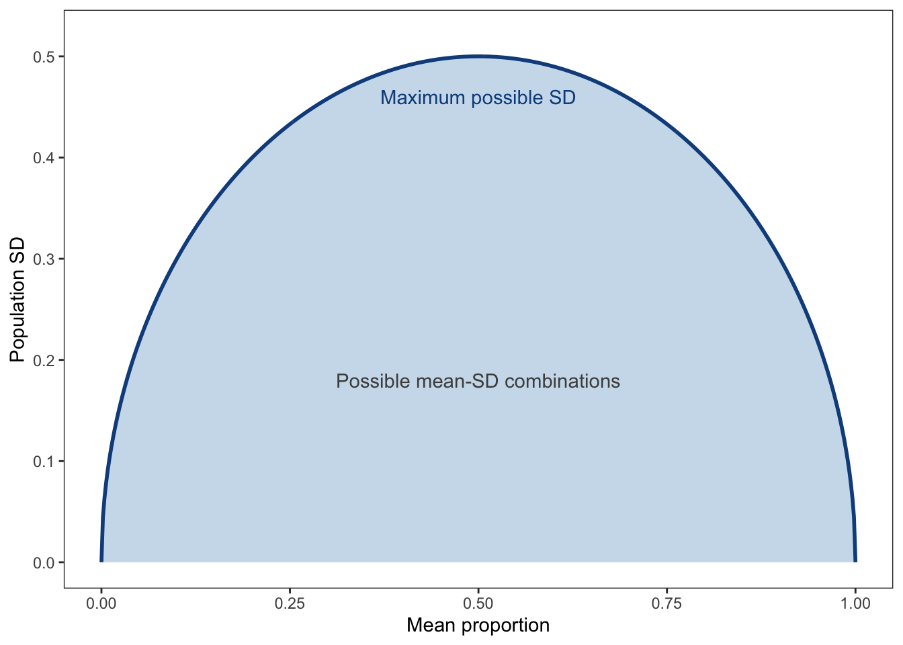
The curve is an upper boundary, not a formula for estimating a missing SD. Binary observations coded 0 and 1 reach this boundary because their variance is exactly \(p(1-p)\). Proportions measured across sites, plots, or trials can have any SD below the boundary. Their actual variation also depends on factors such as the number of individuals contributing to each proportion, differences among sites, and clustering.
Note
The figure shows the population relationship. A reported sample SD usually uses \(n-1\) in its denominator. Its corresponding finite-sample bound is \(sd^2 \leq [n/(n-1)]m(1-m)\), so a sample SD can sit slightly above the curve, especially when the number of independent units is small.
CautionBinary counts and summarized proportions
If a paper reports an exact event count and denominator, such as 17 survivors among 25 animals, those values can be entered directly into an lnOR or lnRR calculation. If the rest of your meta-analysis is of SMD/lnRoM type data, you can convert the calculated lnOR effect size to SMD (but not to lnRoM). See our converting effect sizes page.
Complex experimental designs
Many studies will present data that has already been partially summarized, such as by taking the difference between paired plots, calculating ratios between means (or paired measurements) or reporting effect sizes themselves. Still other studies may present complex experimental designs, such as before-after-control-impact designs, that require you to calculate differences between groups in order to calculate your effect size.
Here we’ll go through the most common of these challenges, starting with differences between treatments.
Differences
Some studies used paired designs where, instead of reporting each pair separately, they subtract the paired samples from each other and report mean±error of the difference.
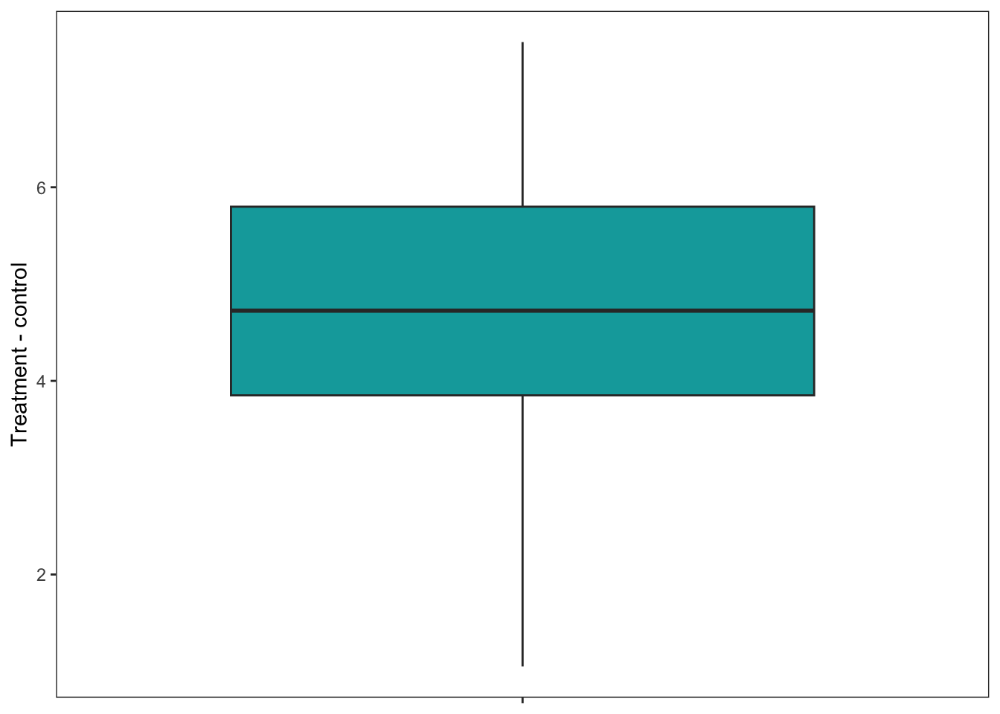
To calculate our target estimand of SMD or lnRoM with this data, we can extract the difference from the boxplot, and convert the medians and interquartile ranges to means±sd. This dataset would look like this:
| \(mean_{difference}\) | \(sd_{difference}\) |
|---|---|
| 4.7391285 | 1.6184814 |
To calculate SMD (which is necessary because we are no longer dealing with ratio-scale data and negative values are likely), we have to be creative.
Set the mean difference to either the control or experimental group, depending on the direction of the rest of your dataset (e.g., positive or negative). Set the other mean to 0.
Use \(sd_{difference}\) for both the control and the experimental group.
As such your data will look like this:
| \(mean_{control}\) | \(sd_{control}\) | \(mean_{experiment}\) | \(sd_{experiment}\) |
|---|---|---|---|
| 4.74 | 1.62 | 0 | 1.62 |
Since the data is paired, you should use a paired version of SMD to calculate your effect sizes.
In metafor::escalc, this would be measure = "SMCRP".
escalc(measure = "SMCRP",
data = diff_dt,
m1i = mean_control,
m2i = mean_experiment,
sd1i = sd_control,
sd2i = sd_experiment,
ri = 0.5,
ni = 15)
mean_control sd_control mean_experiment sd_experiment yi vi
1 4.739129 1.618481 0 1.618481 2.8288 0.2334 “SMCRP” is comparable to unpaired SMD estimators and so can be included in your main analysis. However, cases like this should be flagged for sensitivity analysis.
NoteAlternative estimand: Standardized Mean Change
The example above is ideally suited for a different estimand: standardized mean change. Unfortunately, this estimand is not comparable to SMD. Thus only use this estimand if all of your data consists of differences between groups.
In metafor::escalc, this estimand can be calculated with measure = "SMCC":
escalc(measure = "SMCC",
m1i = -8.11, m2i = 0,
sd1i = 1.27, sd2i = 0,
ri = 0.5,
ni = 15)Ratios of control and treatment groups
Some studies report a response ratio directly. Before extracting it, determine how it was calculated. Two similar-looking summaries estimate different quantities.
If the ratio is of two group means (\(\bar{x}\):
\[ RR_{means}=\frac{\bar{x}_{treatment}}{\bar{x}_{control}}. \] Its natural logarithm is the usual lnRoM point estimate. To calculate its usual sampling variance, we still need information about the uncertainty of both group means and whether the groups were independent or paired. A single reported ratio without an SE, confidence interval, group SDs, or other usable uncertainty is not usable, unfortunately.
However, a study may instead calculate ratios at the observational-scale (\(x\)) between paired measurements. \[ RR_i=\frac{x_{treatment,i}}{x_{control,i}}. \]
The mean of the individual ratios won’t be equal to the ratio of the group means. Likewise, the logarithm of the mean ratio is generally not equal to the mean of the logged ratios. To the best of our knowledge, this data is lost to the abyss.
Results reported as an effect size itself
A similar situation is when studies report their results as an effect size itself (e.g., SMD or lnRoM). These could be extracted directly as your effect size except that in our experience these studies rarely report a measure of dispersion (sampling variance, or SD or SE which could be converted to variance).
If a measure of error is reported then you can use these effect sizes directly or convert them to your target effect size. See here on how to convert between effect size types.
If a measurement of error is provided, then you can extract the data as is, and convert that error to sampling variance. For example, if SMD ± standard error was plotted, the sampling variance is \[vi = SE^2\].
If a study reports standardized mean differences (e.g., Cohen’s d), which is uncorrected estimator of SMD, you can use escalc to convert it to Hedges' g, the dominant estimator of SMD by specifying Cohen’s d with the di argument:
escalc(measure = "SMD",
di = 5,
n1i = 10, n2i = 10)
yi vi
1 4.7882 0.7732 In many other cases, there’s nothing you can do but email the authors and hope they still have their raw data.
Before-after-control-impact designs
Before-after control-impact (BACI) designs are considered gold standard experimental designs. Yet most meta-analyses ignore the before treatment and only extract and analyze the ‘after’ treatments. Here is a BACI figure:
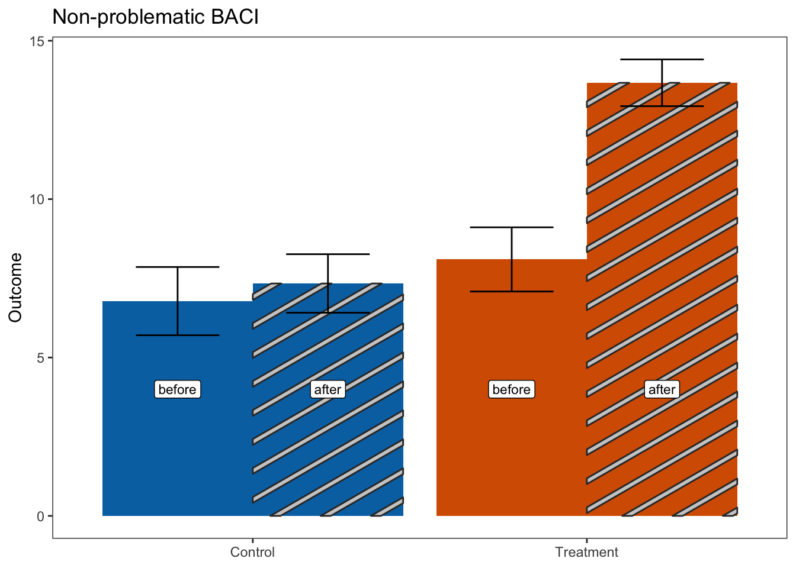
In this case, only extracting and analyzing the ‘after’ data isn’t a big deal, because the differences in the ‘before’ groups in the control and treatment are minimal.
However, what about a more problematic result, where there’s a big difference in before conditions between the control and treatment?
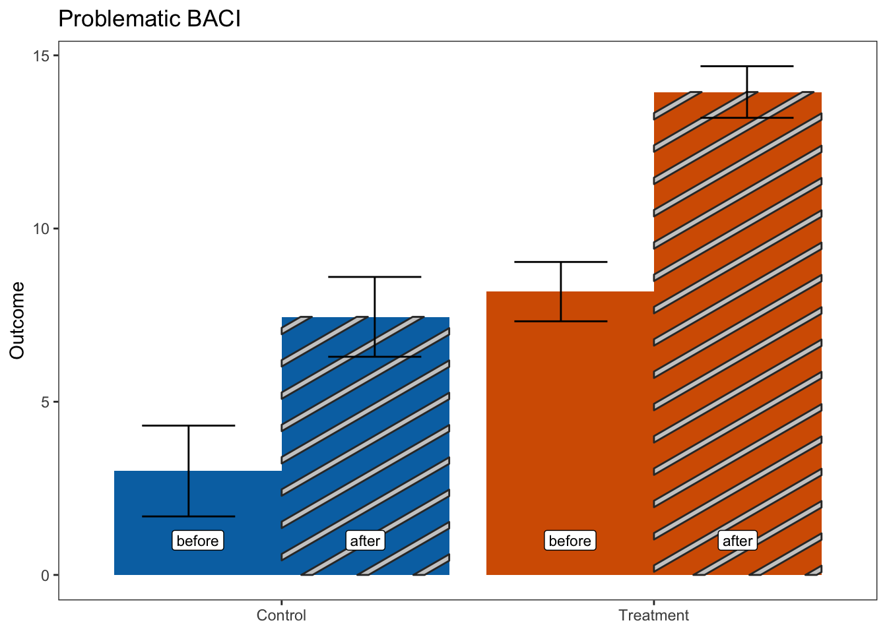
You may also see time series, where the first measurement in the time series is before the treatment. This presents similar conundrums. In that case, it may seem like the easiest bet is just to ignore the before data but, if there were differences between treatments in the before step, this leads to similar problems.
Note
There are alternative estimands for this type of study design (Becker 1988; Morris 2008). If your meta-analysis only includes these study designs, then you should use them. See the escalc cheatsheet for the measure options. However, we expect that you are encountering this study design in a meta-analysis otherwise using standard SMD or lnRoM effect sizes.
If you decide to include studies like this, we believe that the best solution is to calculate the difference between the before and after group means and use the before treatment standard deviation in your calculations.
The extracted dataset would look like this:
| mean_diff_control | sd_before_control | mean_diff_impact | sd_before_impact |
|---|---|---|---|
| 4.450623 | 1.311001 | 5.762647 | 0.856485 |
Note
BACI designs often lead to negative values from subtracting the before treatment from the after treatments—which requires you to use SMD instead of lnRoM as your estimand.
You can also imagine that this data bears certain assumptions—especially from ignoring the after standard deviation. It might be acceptable to average the before and after standard deviations—we don’t know. Regardless, we recommend sensitivity analyses including and excluding this data and potentially using either averaged or before standard deviation to see if that changes results.
The final effect size can be calculated as normal:
escalc(measure = "SMD",
m2i = mean_diff_control,
sd2i = sd_after_control,
m1i = mean_diff_impact,
sd1i = sd_after_impact,
n1i = 15,
n2i = 15,
data = dt_wide,
append = FALSE)
yi vi
1 1.3157 0.1622 Note that you may wish to use a paired estimator for this if the control and impact groups were paired spatially (they cannot be paired temporally).
These 4 group designs may appear in other contexts than pre and post treatment and can be fairly in common in ecological field experiments. For example, to understand if reintroduced wild dogs indirectly affect vegetation by reducing dik-dik browsing and abundance, Ford et al. (2015) placed controls and exclosures in areas with and without wild dogs, predicting that the difference between controls and exclosures would be greatest where there are no wild dogs.
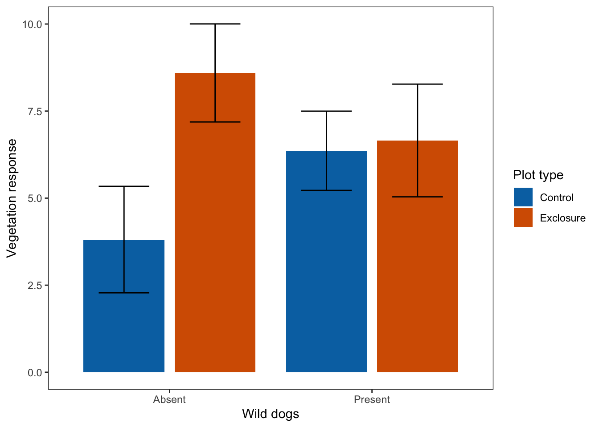
The same difference-in-differences logic above applies to this crossed design. The exclosure effect (exclosure minus control) is calculated within each wild dog level, and the difference between those effects is the interaction:
ford_wide <- dcast(ford_sum, wild_dogs ~ exclosure, value.var = "mean")
ford_wide[, exclosure_effect := Exclosure - Control]
ford_did <- ford_wide[wild_dogs == "Absent", exclosure_effect] -
ford_wide[wild_dogs == "Present", exclosure_effect]
ford_wideKey: <wild_dogs>
wild_dogs Control Exclosure exclosure_effect
<char> <num> <num> <num>
1: Absent 3.809930 8.595374 4.7854438
2: Present 6.360313 6.655455 0.2951415The exclosure effect is 4.79 where wild dogs are absent and 0.3 where they are present, so the difference-in-differences is 4.49. A positive value matches the prediction that wild dogs influence the effects of dik diks on vegetation.
% Change
Sometimes BACI type data is presented directly as percent change, which saves us some of the steps above.
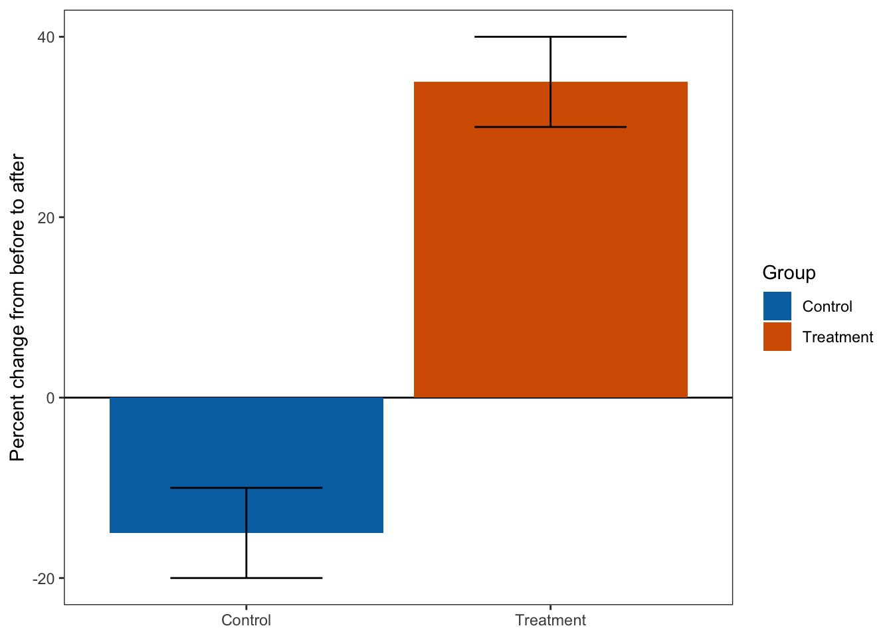
In this case, use the percent change values directly to calculate SMD. You will not be able to use lnRoM in these cases because of negative values.
Because this data has been transformed into a percent, if this percent is bounded between 0 and 100, you may have to convert it to a proportion (divide by 100) and arcsin transform it to reduce boundary issues. See above for further discussion of this transformation.
Crossed designs (meta-analysis of interaction)
Discrete x discrete crossed design
Sometimes you are interested explicitly in interactions between two treatments. In most studies one of the treatments you are interested in would otherwise be a moderator (e.g., not crossed with the main experimental comparison), however in others you find a fully crossed design.
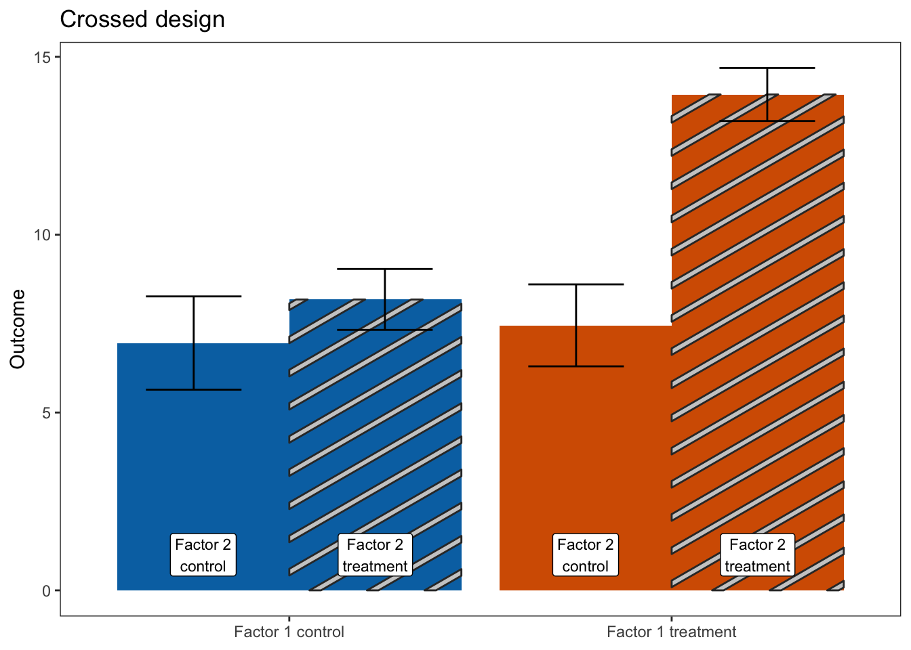
In these cases, you’ll need to record these crossed moderators in separate columns in your dataset. If your meta-analysis is explicitly interested in those moderators, you’ve scored a major win! If not, then these crossed moderators can be ignored (but should be factored into the non-independence variables in your dataset accordingly).
Continuous x discrete crossed design
However, sometimes interactions will be between continuous and discrete variables:
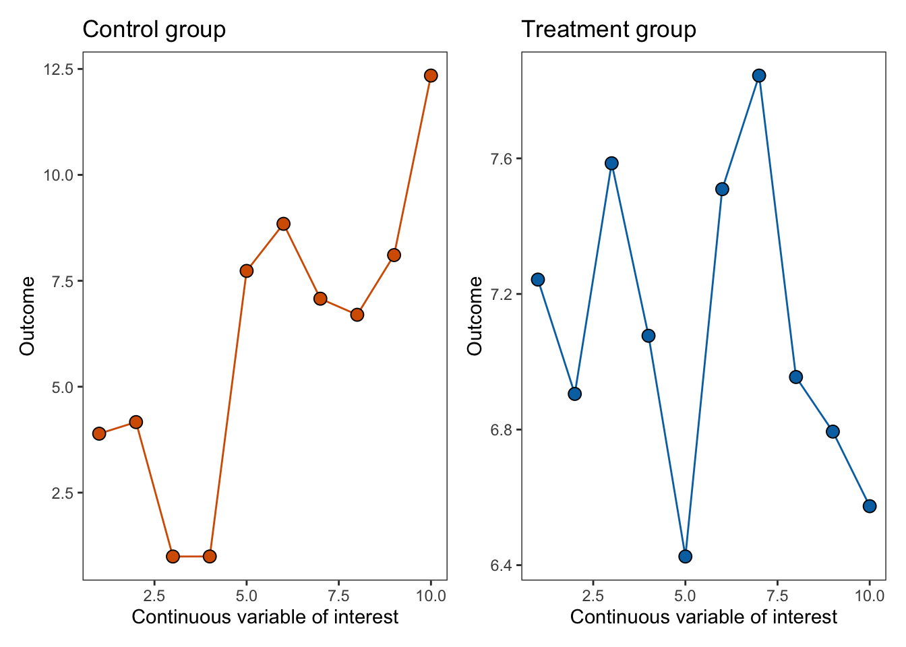
In this case, you could extract each point for the control group and the treatment group and calculate mean±SD across the continuous variable. But, if the continuous variable was a key moderator of interest in your analysis, it’d be lost from your meta-analysis.
Alternatively, you could calculate two Zr effect sizes, one for the ‘control group’ and one for the ‘treatment group’. The control group and moderator factor would then be a moderator—if this is how the rest of your dataset is designed.
As you can see, there might be no perfect solution. Care and thought are necessary to make this type of data comparable to other effect sizes in your dataset.
Time series
Time series with a binary predictor
Sometimes the data is presented as a time series with a discrete intervention at one point in the time series, such as the introduction or eradication of a species. For example:
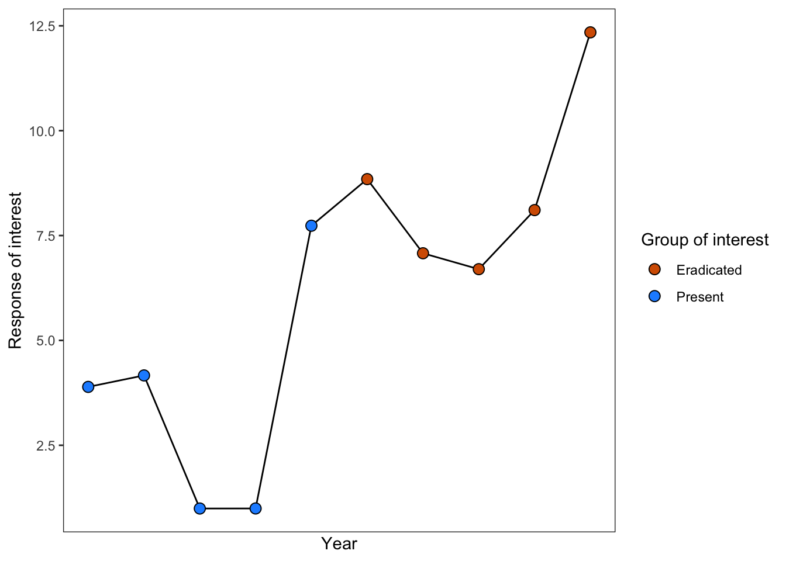
You’ll also encounter cases with only a few measurements on one side of the intervention:
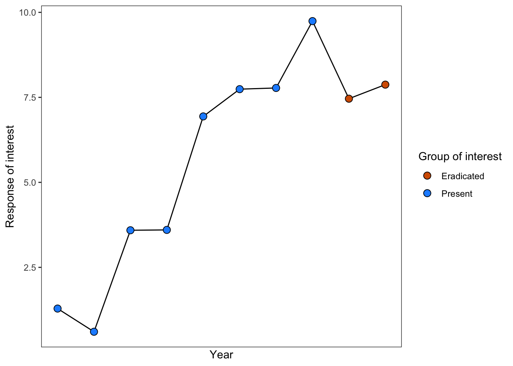
The measurements before and after the intervention form one interrupted time series. Consecutive years are usually serially correlated, and the five years before the intervention are not naturally paired one-to-one with the five years after it. Treating the points as independent group replicates, or automatically using a paired SMD estimator ignores this non-independence.
In most cases, we expect you’ll exclude this data. However, if data is extremely limited you may want to take the mean±sd of the two groups (in this case “Present” and “Eradicated”) and calculate SMD or lnRoM. You could also calculate a correlation coefficient (Zr), treating the two groups as \(0\) or \(1\).
In either case, this requies calculating summary statistics off of non-independent samples. We therefore recommend, if you think this data is essential to include, to conduct sensitivity analyses including and excluding data summarized off of non-independent measurements. See our discussion of replication and non-independence here.
ImportantRecord the level of every summary
For every extracted mean and SD, record whether it summarizes measurements across individuals, space, time, or a combination of these. Also record the experimental or sampling unit that received the treatment. These fields make it possible to recognize incompatible units of replication or directions of summaries and to plan your sensitivity analyses.
Time series with error bars
What do you do if each of these measurements has associated error?
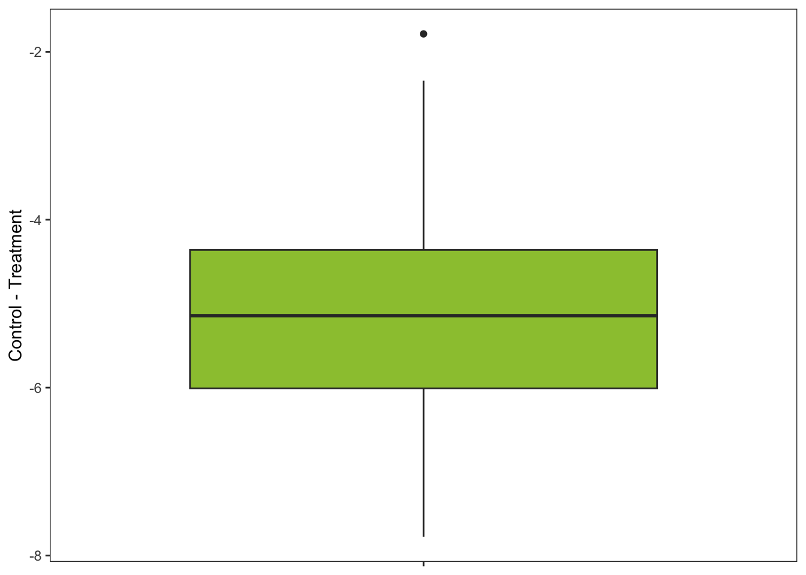
In this case, we recommend choosing the time point before and after the intervention and extracting the means and sd for an SMD or lnRoM effect size. Because the samples are paired, use a paired estimator of of your estimand.
Unfortunately, this ignores what may seem like an obvious and important pattern from the earlier and later measurements. However, sadly, the observational study design lack spatial controls, meaning that the pattern is lost to the sea of unusable data.
Other reporting formats
Geometric mean
Some studies report geometric means instead of arithmetic means. If the response is log-normally distributed and the reported dispersion is a geometric standard deviation, the geometric mean (\(m_{geo}\)) and geometric SD (\(sd_{geo}\)) can be converted to an arithmetic mean (\(m_a\)) and arithmetic SD (\(sd_a\)):
\[\begin{aligned} &Var_{ln} = log(sd_{geo})^2 \\ &m_a = m_{geo} * e^{\frac{Var_{ln}}{2}} \\ &sd_a = m_a * \sqrt{e^{Var_{ln}} - 1} \\ \end{aligned}\]
In R:
final_mean final_sd
47.17111 54.10126 The arithmetic SD can be much larger than the geometric SD because a geometric SD is a multiplicative factor rather than a dispersion measured in the response’s original units.
Warning
Do not apply this conversion when the reported error is an arithmetic SD, SE, or confidence interval around a geometric mean.
Means or standard deviations equal to 0
A zero mean and a zero standard deviation create different problems. However this situation is possible with extreme results: every single island with an introduced predator (your predictor) has 0 prey (your response variable). In this case, the mean for the islands with introduced predators would be 0 with a standard deviation of 0.
SMD can include zero or negative means as long as at least one groups’ standard deviation is \(>0\). In this case, your data is almost certainly heteroscedastic and you should use the SMDH formulation of SMD (measure = "SMDH" in escalc), which has to be applied to all the data in your dataset. In ecological meta-analysis, we expect that SMDH is likely the preferred formulation because heteroscedasticity is common (and a subject interesting in its own right, see our discussion of variability effect sizes)
Warning
If both groups have an SD of 0, the usual SMD is undefined because there is no within-group variation with which to standardize the mean difference.
The lnRoM point estimate requires two positive means on a meaningful ratio scale. It is undefined when either mean is 0. Rather than adding the same arbitrary constant, such as 0.01, to every kind of response, you can define the smallest positive resolution for each outcome before calculating effect sizes. This is the smallest positive change that the biology, measurement method, and study design could have reported. It might represent one crossing, one animal, one colony, or the detection limit of an assay.
However, as we demonstrated here, lnRoM values can be gigantic if one of the means is near 0. Think carefully about whether lnRoM is the appropriate estimand for your question.
Missing error bars
Many studies report means but do not report standard deviations (\(SDs\)), standard errors, or confidence intervals. Without them, we cannot calculate the sampling variance of an effect size, and the study is usually dropped. Dropping studies wastes data and can bias the overall result.
Nakagawa et al. (2023) showed that for lnRoM, we can replace missing standard deviations with the weighted average \(CV\) (\(CV = SD/m\)) from the studies that did report \(SDs\). This retains studies that would otherwise be excluded, provided the means are positive and lnRoM answers the biological question.
The sampling variance of lnRoM can be written in terms of each group’s \(CV\) and sample size:
\[ v_{\text{lnRoM}} = \frac{CV_1^2}{n_1} + \frac{CV_2^2}{n_2} \]
\(SDs\) cannot be borrowed from other studies, because they depend on each study’s units and scale. \(CVs\) can be, because they have been standardized by the mean unitless. So when a study is missing its SDs, we can use an average \(CV\) from the studies that reported them.
Unfortunately, this only works for lnRoM. For standardized mean difference (SMD), the \(SD\) is part of the effect size itself, not only its sampling variance, so an average \(CV\) cannot stand in for it.
Before you impute
- Check the article, supplementary material, and any data repository for the missing \(SD\).
- Back-calculate \(SDs\) from other reported statistics: standard errors (\(SD = SE \times \sqrt{n}\)), confidence intervals, test statistics, or figures.
- Contact the authors.
- Decide how you will handle any remaining missing \(SDs\) before you look at the results, and write it in your protocol.
Two approaches
Nakagawa et al. (2023) describe two ways to use the average \(CV\):
Missing-cases approach: use observed study-specific SDs where available and an average CV to estimate sampling variances only for cases with missing SDs.
All-cases approach: use average-CV sampling variances for every effect size, creating a consistent weighting scheme across studies with and without reported SDs.
Neither approach should be selected because it gives a preferred result. Compare them with a complete-case analysis and report the proportion of effects with missing SDs, the CV estimator, and how the conclusion changes.
In metafor
escalc() has two average-\(CV\) options for measure = "ROM":
-
vtype = "AV": one average \(CV\) for group 1 and another for group 2, each weighted by sample size. -
vtype = "AVHO": a single average \(CV\) pooled across both groups. Use this if you expect the two groups to have similar CVs.
On its own, vtype = "AV" applies the all-cases approach. To get the missing-cases approach, give vtype a vector: "LS" (the default, study-specific) for rows with SDs, and "AV" for rows without.
WarningSet
correct = FALSE
Since metafor 4.8-0, escalc() applies a small-sample bias correction to lnRoM by default (Lajeunesse2015?) (see here). That correction uses the SDs, so yi is returned as NA for any row with a missing SD, even though vi is calculated. Set correct = FALSE when using vtype = "AV" or "AVHO" with missing SDs, or use the manual calculation below, which applies the bias correction with the average \(CV\) instead.
Worked example
We’ll use dat.curtis1998, a classic ecological lnRoM dataset on how elevated CO2 affects woody plant mass. It has complete SDs, so we’ll delete SDs from about 30% of the papers and compare each approach against the answer from the full data.
Let’s demonstrate. We’ll load a dataset included in metafor and set some standard deviations to NA and then use both the missing-cases and all-cases approach.
library(metafor)
dat <- dat.curtis1998
# Effect sizes from the full data, for reference
dat_full <- escalc(measure = "ROM",
m1i = m1i, sd1i = sd1i, n1i = n1i,
m2i = m2i, sd2i = sd2i, n2i = n2i,
data = dat, correct = FALSE)
# Delete both SDs for ~30% of papers. Missingness usually happens at
# the paper level, so we delete by paper rather than by row.
set.seed(2026)
papers <- unique(dat$paper)
miss_papers <- sample(papers, round(0.3 * length(papers)))
dat_miss <- dat
dat_miss$sd1i[dat_miss$paper %in% miss_papers] <- NA
dat_miss$sd2i[dat_miss$paper %in% miss_papers] <- NA
no_sd <- is.na(dat_miss$sd1i) | is.na(dat_miss$sd2i)
mean(no_sd) # proportion of effect sizes with missing SDs[1] 0.2058824Now calculate the effect sizes three ways:
# 1. Complete-case: rows with missing SDs get vi = NA and are
# dropped when the model is fitted
dat_cc <- escalc(measure = "ROM",
m1i = m1i, sd1i = sd1i, n1i = n1i,
m2i = m2i, sd2i = sd2i, n2i = n2i,
data = dat_miss,
correct = FALSE) # Must specify uncorrected estimator
# 2. Missing-cases: study-specific variance where SDs exist,
# average-CV variance where they don't
dat_mc <- escalc(measure = "ROM",
m1i = m1i, sd1i = sd1i, n1i = n1i,
m2i = m2i, sd2i = sd2i, n2i = n2i,
data = dat_miss,
correct = FALSE,
vtype = ifelse(no_sd, "AV", "LS")) # Vector of `vtypes`
# 3. All-cases: average-CV variance for every row
dat_ac <- escalc(measure = "ROM",
m1i = m1i, sd1i = sd1i, n1i = n1i,
m2i = m2i, sd2i = sd2i, n2i = n2i,
data = dat_miss,
correct = FALSE,
vtype = "AV")Fit the same multilevel model to each, with effect sizes nested within papers.
fit <- function(d) rma.mv(yi, vi, random = ~ 1 | paper/id, data = d)
models <- list(
"Full data (reference)" = fit(dat_full),
"Complete-case" = fit(dat_cc),
"Missing-cases" = fit(dat_mc),
"All-cases" = fit(dat_ac)
)
data.frame(
k = sapply(models, function(m) m$k),
estimate = sapply(models, function(m) round(coef(m), 3)),
ci.lb = sapply(models, function(m) round(m$ci.lb, 3)),
ci.ub = sapply(models, function(m) round(m$ci.ub, 3))
) k estimate ci.lb ci.ub
Full data (reference) 102 0.258 0.214 0.301
Complete-case 81 0.255 0.209 0.300
Missing-cases 102 0.261 0.218 0.304
All-cases 102 0.290 0.229 0.350The complete-case analysis loses about a fifth of the effect sizes. Both average-\(CV\) approaches keep all of them.
Interestingly, the all-cases estimate differs from the full-data reference more than the others do. This is not caused by the missing data. In fact, running the all-cases approach on the complete dataset gives the same estimate as when we analyzed ‘dat_miss’.
intrcpt
0.2895167 The difference comes from the weighting. CVs in this dataset range from about 0.01 to 1.25, and sample sizes are small (median n = 5). Nakagawa et al. (2023) note that the all-cases approach can be biased in exactly this situation, when CVs differ strongly among studies and samples are small, and that the missing-cases approach may then be more reliable.
Here, the missing-cases estimate is closer to the full-data reference. To check how much CVs vary in your own data, run a meta-analysis of lnCVR and look at the between-study variance. When the two approaches disagree, report both.
Matching Nakagawa et al. (2023) exactly
vtype = "AV" differs from the paper’s all-cases method in three ways:
It uses the first-order variance formula shown above. Nakagawa et al. (2023) uses a second-order formula (Lajeunesse2015?).
With
correct = FALSE, the point estimate is not bias-corrected. The paper bias-corrects it using the average CVs.It averages CVs across all effect sizes at once, weighted by sample size. The paper first averages CVs within each study, then averages those across studies, weighted by each study’s mean sample size. This stops studies that contribute many effect sizes from dominating the average CV.
To follow the paper exactly, calculate the effect sizes by hand:
# Step 1: within each study, average the CVs (weighted by sample size)
# and the sample sizes. Studies with missing SDs are left out.
obs <- subset(dat_miss, !is.na(sd1i) & !is.na(sd2i))
by_study <- do.call(rbind, lapply(split(obs, obs$paper), function(s) data.frame(
cv1 = weighted.mean(s$sd1i / s$m1i, s$n1i),
cv2 = weighted.mean(s$sd2i / s$m2i, s$n2i),
n1 = mean(s$n1i),
n2 = mean(s$n2i))))
# Step 2: average across studies, weighted by each study's mean sample size
cv1 <- weighted.mean(by_study$cv1, by_study$n1)
cv2 <- weighted.mean(by_study$cv2, by_study$n2)
# Step 3: bias-corrected point estimate and second-order sampling variance
dat_ac2 <- dat_miss
dat_ac2$yi <- with(dat_ac2, log(m1i / m2i) + 0.5 * (cv1^2 / n1i - cv2^2 / n2i))
dat_ac2$vi <- with(dat_ac2, cv1^2 / n1i + cv2^2 / n2i +
cv1^4 / (2 * n1i^2) + cv2^4 / (2 * n2i^2))
fit(dat_ac2)
Multivariate Meta-Analysis Model (k = 102; method: REML)
Variance Components:
estim sqrt nlvls fixed factor
sigma^2.1 0.0112 0.1058 29 no paper
sigma^2.2 0.0144 0.1199 102 no paper/id
Test for Heterogeneity:
Q(df = 101) = 208.2638, p-val < .0001
Model Results:
estimate se zval pval ci.lb ci.ub
0.2886 0.0310 9.3128 <.0001 0.2279 0.3494 ***
---
Signif. codes: 0 '***' 0.001 '**' 0.01 '*' 0.05 '.' 0.1 ' ' 1In this example the result (0.289) is almost identical to vtype = "AV" (0.290), even though papers contribute between 1 and 18 effect sizes each. For most datasets, vtype = "AV" with correct = FALSE is a reasonable shortcut.
Note
Note that for sensitivity analyses, you should consider (at least) three analysis sets:
Using only the studies that reported standard deviation (and using the
yiandvireturned byescalc)Using the
yiandvireturned byescalcalongside the “missing cases” calculations ofyiandvi(type = "AV")Using the
yiandvifrom the “all-cases” method (calculated manually, as above)
Important
If your data is overdispersed, then an alternative is to calculate the inverse of effective sample size (\(1/N_0\)), and use this as your model weight. See above and Nakagawa et al. (2023). Note that doing so limits you to lnRoM, since SMD requires \(sd\) in the point estimator formula and thus requires \(sd\) directly.
Effective sample size is defined as: \[ \begin{aligned} &N_{0} = \frac{4n_1n_2}{n_1 + n_2}\\ \end{aligned} \]
Model outputs
Many studies fail to report means and standard deviations and instead report model test statistics and p-values. If these are derived from simple models (i.e., t tests), they can be used to calculate SMD (not lnRoM). However, especially with modern computation and tools, many studies report statistics derived from mixed effect models or non-linear models. These estimates are rarely usable. There is a subtle irony in that increasing sophistication in the primary literature is increasingly burying otherwise usable data from the greedy, groping hands of the meta-analyst.
| Reported result | Potential route | Information to check |
|---|---|---|
| Independent two-group \(t\) test | Convert to SMD | Signed \(t\), both group sizes, and test design |
| Paired \(t\) test | Convert to a standardized mean change | Signed \(t\), number of pairs, and choice of standardizer |
From the t statistic
Calculating SMD from test statistics depends on whether the data come from a paired design (in which case df = n-1) or an independent two-sample design (df = n_1 + n_2 - 2). This is the formula for calculating SMD from a unpaired, two-sample design t test statistic:
\[\begin{aligned} &d=t*\sqrt{\frac{1}{n_1} + \frac{1}{n_2}} \\ &J= 1 - \frac{3}{4(n_1 + n_2 - 2) - 1} \\ &g=J*d \\ &Var(g) = \frac{n_1 + n_2}{n_1 n_2} + \frac{g^2}{2(n_1 + n_2 - 2)} \\ \end{aligned}\]
In escalc you simply specify the t statistic (with ti), as well as sample sizes for each group (n1, n2) and use measure “SMD”, which will return the unpaired SMD estimate.
t = -1.5
n1 = 15
n2 = 15
escalc(measure = "SMD",
ti = t,
n1i = n1,
n2i = n2)
yi vi
1 -0.5329 0.1381 For a paired design, the paired \(t\) statistic gives you a standardized mean change: the mean difference divided by the SD of the differences, \(d_z = t/\sqrt{n}\). That isn’t on the same scale as an ordinary SMD. To put it on the SMD (raw-score) scale, multiply by \(\sqrt{2(1-\rho)}\). This assumes equal pre and post SDs and needs a pre-post correlation \(\rho\) (use 0.5, with 0.8 as a sensitivity analysis):
\[\begin{aligned} &d_z=\frac{t}{\sqrt{n}} \\ &d=d_z\sqrt{2(1-\rho)} \\ \end{aligned}\]
escalc applies the small-sample correction and returns the variance for the paired estimate, so you do not need to compute \(J\) or \(Var(g)\) by hand.
Then hand that \(d\) to escalc with measure = "SMCRP". The trick is to enter \(d\) as the treatment mean, 0 as the control mean, and 1 for both SDs, so the standardized difference escalc calculates is just \(d\). Supply the assumed correlation and the number of pairs. We show the change-score version, SMCC, for comparison:
yi vi
1 -0.3742 0.0696 The raw-score version (SMCRP) is on the same metric as an independent-groups SMD, so it can be pooled with other SMDs.
Note
An alternative estimand, the change-score version (SMCC) divides by the SD of the change scores. It estimates a different quantity and should not be pooled with independent-groups SMDs. This can be calculated in a similar fashion:
escalc(measure = "SMCC",
ti = t,
ni = n_pairs)
yi vi
1 -0.3661 0.0711 From p values:
When only a two-sided \(p\) value from an independent two-group \(t\) test is reported, escalc uses the unusual convention that the sign attached to the input \(p\) value supplies the missing effect direction. Confirm the direction from the reported means, figure, or text before using this route.
p = -0.07
n1 = 15
n2 = 15
escalc(measure = "SMD",
pi = p,
n1i = n1,
n2i = n2)
yi vi
1 -0.6693 0.1408 Least Square Means (LS Means) or Estimated Marginal Means
Estimated marginal means are adjusted model predictions. They are not interchangeable with raw arithmetic means, and their SEs are not within-group SDs.
Sadly, this data is lost to the seas of unusable data.
PCAs — risky business
Imagine you are conducting a meta-analysis of risk-taking in animals. You are including a variety of behavioral responses: flight initiation distances, vigilance, activity rate, and so on. All of these are considered proxies for risk-taking (and you are of course looking at these both combined and separately because you are a sensitivity-analysis master).
Then you come upon a real stumper of a study. They used a principal components analysis (PCA) to synthesize the exact same variables you are interested in into a single ordination space. The first axis of this ordination space (PC1) has synthesized all the variables you are interested in into a single variable. This might look like this:
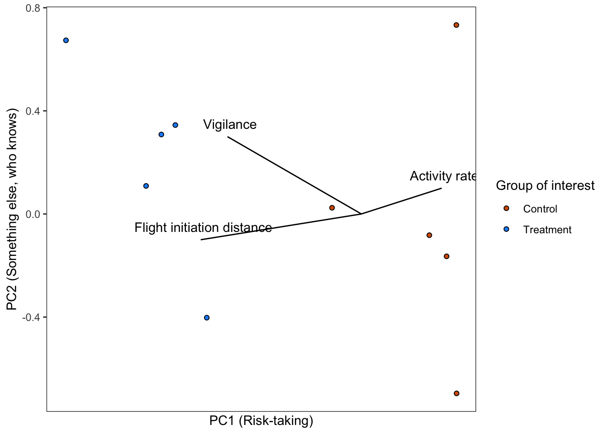
The authors also provide this (though you could extract it from the points in the figure above as well):
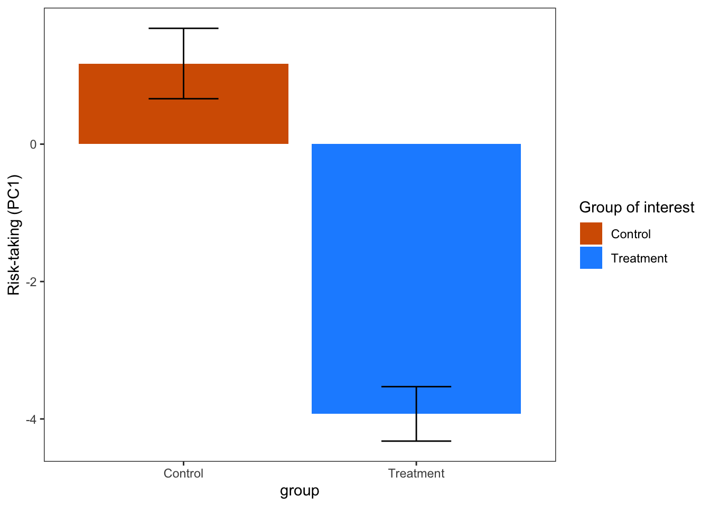
Is this data usable?
Before extracting these means±sd, we recommend looking for raw data or contacting the authors. If these prove to be fruitless, and your dataset is small and hungry, it might be worth using the PC1 scores. However, be certain that the PC axis is synthesizing variables that are otherwise considered legitimate responses in your dataset.
And be careful: you should conduct sensitivity analyses excluding this data to ensure that your results are robust.
References
Ford, A. T., J. R. Goheen, D. J. Augustine, M. F. Kinnaird, T. G. O’Brien, T. M. Palmer, R. M. Pringle, and R. Woodroffe. 2015. Recovery of african wild dogs suppresses prey but does not trigger a trophic cascade. Ecology 96:2705–2714.
Macartney, E. L., M. Lagisz, and S. Nakagawa. 2022. The relative benefits of environmental enrichment on learning and memory are greater when stressed: A meta-analysis of interactions in rodents. Neurosci. Biobehav. Rev. 135:104554.
Nakagawa, S., D. W. A. Noble, M. Lagisz, R. Spake, W. Viechtbauer, and A. M. Senior. 2023. A robust and readily implementable method for the meta-analysis of response ratios with and without missing standard deviations. Ecol. Lett. 26:232–244.
Pick, J. L., S. Nakagawa, and D. W. A. Noble. 2018. Reproducible, flexible and high throughput data extraction from primary literature: The metaDigitise R package.